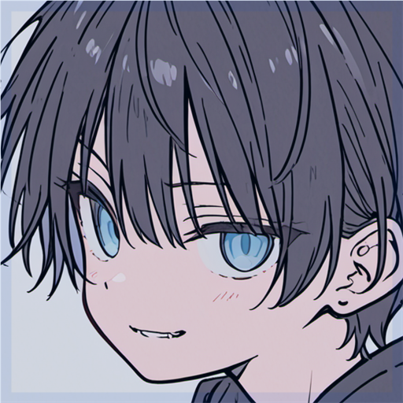

新しいメンバーを、スムーズに迎える。
認証パネルから参加者を案内し、認証後のロール付与まで。毎回の手作業を減らせます。
メンバー認証 / ロール付与DISCORD BOT & OPEN SOURCE
Discordのコミュニティ運営を支えるBotと、
日々の開発に役立つオープンソース。
Disnanaは、使う人の身近な課題から、
ソフトウェアをつくっています。
認証からモデレーション、日々のサーバー管理まで。
01 / DISNANA BOT
参加者の認証、荒らしへの対応、管理の記録。
運営で繰り返す作業を、Disnanaがお手伝いします。
初代「ななはる♪」から続く、
Discord Botの開発プロジェクトです。
認証パネルから参加者を案内し、認証後のロール付与まで。毎回の手作業を減らせます。
メンバー認証 / ロール付与短時間の連投や不審な動きを検知。メッセージの一括削除など、対応後の整理にも使えます。
スパム対策 / モデレーションモデレーションの結果を記録し、あとから確認。サーバーの設定や状態は、ダッシュボードからも確認できます。
ログ記録 / ダッシュボード02 / OPEN SOURCE
データの保存を扱いやすくするライブラリから、
認証のためのツールまで。ソースコードを公開しています。
Pythonの辞書のように使えるSQLiteラッパー。キャッシュと非同期書き込みを取り入れたデータ保存を目指しています。
GitHub辞書に近い操作で、データをSQLiteに保存。JSONデータの保存や暗号化にも対応したライブラリです。
GitHubWindowsのパスワードにワンタイムパスワードを活用する、認証とセキュリティのためのツールです。
GitHub
MEET THE DEVELOPER
tp-li Disnana創設者・開発者
Pythonを中心に、Bot、データベース、インフラを開発・運用しています。認証やデータの保護など、セキュリティを意識した設計にも取り組んでいます。
プロフィールと開発実績03 / SUPPORT
導入の相談、使い方、不具合の報告。
公式Discordまたはメールで受け付けています。
Bot公式サイトの導入案内から、Discordの招待画面へ進めます。追加先のサーバーと必要な権限を確認し、導入後は /help でコマンドを確認してください。
利用できる機能や料金は、公式のプランページにまとめています。サーバーに合うプランを確認してからご利用ください。
まず稼働状況で障害やメンテナンス情報をご確認ください。解決しない場合は、起きたこと、発生時刻、使用したコマンドを添えて公式Discordまたはメールでご相談ください。
利用規約とプライバシーポリシーに掲載しています。利用前にご確認ください。